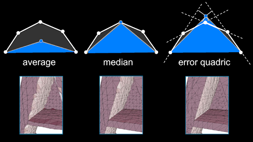

Unreal Engine 5 Nanite explained
But what is Nanite ?
My proof of concept
Enter the Fast Quadric Mesh Simplification algorithm available as a C library. The algorithm is described in the following paper: Surface Simplification Using Quadric Error Metrics and the standford lecture notes here. I initially learned about this algorithm while reading the nanite notes and reading through the paper above. Let's learn this technique as well then !
Tangent one: Simplifying Meshs
The Quadric mesh simplification is a technique to reduce the number of vertices, edges and faces of a mesh while keeping the most accurate representation of said mesh. It is well illustrated with a simple drawing:
We'll derive an error on each vertex depending on the planes the vertex is part of. This will enable us to derive a new updated position for the vertex once we simplify around it, keeping a more accurate form. We'll then remove vertices by collapsing them by pairs using the quadric error as a threshold. The github implementation I used allows for a target vertices count to be specified, which will be useful later.
Tangent 2: Clustering
TODOReferences
- Nanite youtube demo: https://youtu.be/qC5KtatMcUw?si=qyiJhpOMmDkylBNa
- Nanite deep dive at SIGGRAPH 2021: https://www.youtube.com/watch?v=eviSykqSUUw&ab_channel=SIGGRAPHAdvancesinReal-TimeRendering
- Nanite slides and comments: https://advances.realtimerendering.com/s2021/Karis_Nanite_SIGGRAPH_Advances_2021_final.pdf
- Quadric Simplification C library: https://github.com/sp4cerat/Fast-Quadric-Mesh-Simplification
- Quadric Simplification paper: https://www.cs.cmu.edu/~./garland/Papers/quadrics.pdf
- Quadric Simplification notes: https://graphics.stanford.edu/courses/cs468-10-fall/LectureSlides/08_Simplification.pdf